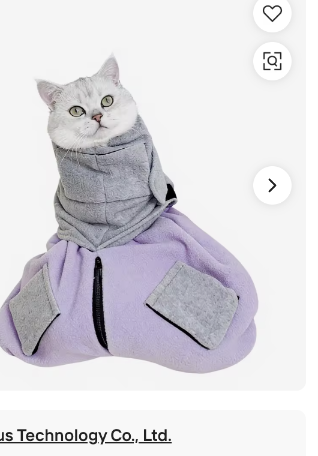
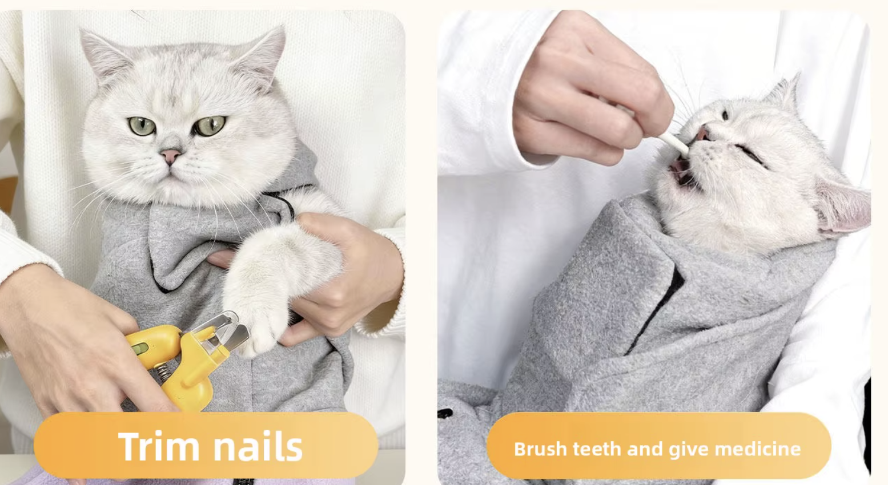
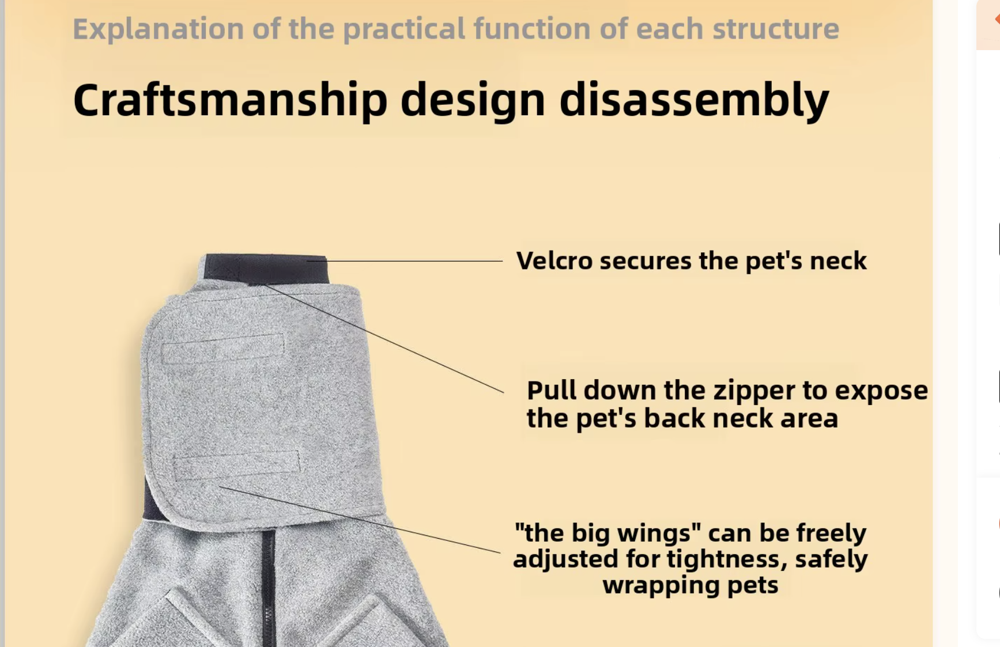
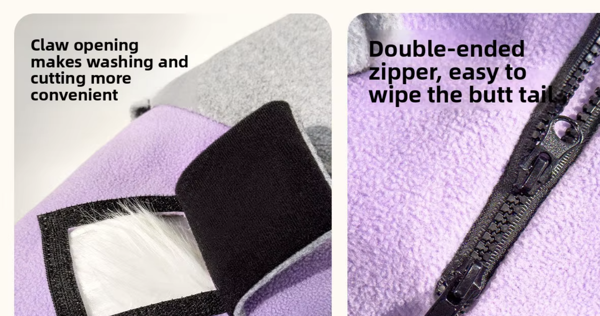

📸 Доска генерации фото — Movaro Calm Wrap
Товар (реальный Vetnutro): мягкий СЕРЫЙ флис (один цвет, фиолетовый игнорируем) · велкро-воротник · велкро-флапы для лап · наружные регулируемые «крылья» · молния по спине. ⛔ Логотипа на врапе НЕТ (товар не кастомизируем). Кот всегда расслаблен (мягкие глаза, расслабленное тело), никогда не зажат/в панике — кроме спец-кадра «before».
Метод: ① сначала Шаг 0 — создаём наш мастер врапа · ② каждый батч = НОВЫЙ чат, thinking-режим, прикладываем мастер (+ нужный референс), один промт = карусель из N РАЗНЫХ кадров одного товара/кота · ③ все кадры БЕЗ текста (наложим кодом) · фраза на карусель уже встроена в промты.
Как пользоваться: открой батч → приложи в ChatGPT референсы из строки «Приложить» (лежат в gen-vetnutro/refs/) → скопируй промт (тёмный блок, тапни и «выделить всё») → вставь. Соотношение сторон и куда пойдут кадры — в тегах.
🎯 Референсы товара (лежат в gen-vetnutro/refs/)

01 · на коте спереди

02 · в деле (стрижка/лекарство)

03 · раскрыт (воротник/молния/крылья)

04 · деталь claw-opening + молния
Это вырезки с реальной страницы поставщика Vetnutro — наш точный товар.
🎨 STYLE-LOCK (встроен в каждый промт — отдельно вставлять не нужно)
Bright natural daylight, cozy warm home interior (soft sofa, blanket, neutral tones, a plant), premium lifestyle product photography, soft shallow depth of field, photorealistic, shot on a 50mm lens. The wrap is SOFT GRAY FLEECE only, with a velcro collar, velcro flap openings, external adjustable "wings" and a back zip — exactly like the reference. NO logo or text on the wrap. The cat looks calm, relaxed and content — soft eyes, loose body — never panicked or pinned. No text, no watermark anywhere in the image.
▶ ШАГ 0 · Создать НАШ мастер врапа
на белом + на коте4 кадра→ якорь для всех батчей
Приложить:
01
03
Use the two attached photos as the exact product reference. Recreate THIS cat calming wrap as a clean photoreal product, in SOFT GRAY FLEECE only (single gray colorway — ignore any purple), with NO logo or branding on it. Generate a consistent 4-frame sequence of the SAME identical wrap: (1) laid flat and open on a clean white background, showing the full construction — velcro collar, flap openings, external "wings", back zip; (2) three-quarter angle on white; (3) front on white; (4) gently worn on a calm, relaxed short-hair cat, head out, in a cozy home. Identical product, same gray fleece and details in every frame. Photorealistic, no text.
[+ STYLE-LOCK]
➡️ Сохрани из результата: master-flat (кадр 1) · master-3-4 (кадр 2) · master-on-cat (кадр 4) — их прикладываем в батчи ниже.
Батчи 1–8
Батч 1 · Спокойный кот В ВРАПЕ
4:5~8 кадров→ галерея · about · before/after
Приложить:master-on-cat01
Using the attached wrap as the exact product (gray fleece, no logo), generate a consistent 8-frame sequence of the SAME cat wearing the SAME wrap, same cozy home, same lighting — each frame a DIFFERENT shot: (1) hero product shot, calm cat sitting wrapped, clean and premium; (2) close-up of the cat's relaxed, sleepy face; (3) three-quarter body in the wrap; (4) cat dozing/settled on a blanket; (5) straight front portrait; (6) one front paw gently out through the velcro flap; (7) calm cat lying down, only the claws left to trim; (8) close detail of the soft fleece texture and flap. Photorealistic, vertical 4:5, no text.
[+ STYLE-LOCK]
Батч 2 · Уход в одни руки
4:5~7 кадров→ галерея «руки» · about · UGC
Приложить:master-on-cat02
Using the attached wrap as the exact product, generate a consistent 7-frame sequence — one owner (hands/arms only, no face) calmly caring for the SAME calm cat in the SAME gray wrap at home, each frame a DIFFERENT task: (1) trimming a front claw with clippers, paw out through the flap; (2) the velcro flap open with one paw exposed; (3) giving a pill/liquid medicine; (4) cleaning ears; (5) wiping eyes; (6) gentle brushing; (7) one hand calmly resting on the wrapped cat, cat relaxed. Photorealistic, vertical 4:5, no text.
[+ STYLE-LOCK]
Батч 3 · Только товар / спека (на белом)
4:5~6 кадров→ compare · спека · инструкция
Приложить:master-flat0304
Using the attached wrap as the exact product (gray fleece, no logo), generate a consistent 6-frame product sequence on a clean white background, studio lighting, each frame a DIFFERENT view: (1) full wrap laid flat and open showing the whole construction; (2) close-up of the velcro collar; (3) close-up of a velcro paw flap opening; (4) the external adjustable "wings"; (5) the back zip detail; (6) the wrap neatly folded. Photorealistic, sharp, vertical 4:5, no text.
[+ STYLE-LOCK]
Батч 4 · Инструкция 3 шага
4:5~4 кадра→ блок «инструкция»
Приложить:master-on-cat03
Using the attached wrap as the exact product, generate a consistent 4-frame how-to sequence with the SAME cat and SAME scene, each a DIFFERENT step: (1) the open wrap laid out with the calm cat placed on it, owner's hands starting to fold it; (2) the cat wrapped snug, head out, settled; (3) one velcro flap opened, a single paw out, owner trimming the claw; (4) close finishing shot, calm cat, claws done. Photorealistic, vertical 4:5, no text.
[+ STYLE-LOCK]
Батч 5 · UGC-сторис (РАЗНЫЕ коты/дома)
9:16~7 кадров→ блок UGC · reviews
Приложить:master-on-cat(как образец товара; коты/комнаты РАЗНЫЕ)
Using the attached wrap as the exact product (gray fleece, no logo), generate 7 separate casual phone-style photos, each a DIFFERENT cat, owner and home (varied rooms, lighting, cat breeds/colors) — authentic amateur smartphone look, slightly imperfect, like real customer photos: (1) a happy content cat purring in the wrap; (2) a big grumpy "spicy" cat sitting calm in the wrap; (3) an owner alone trimming a paw, cat relaxed; (4) the wrap and simple packaging at home on a table; (5) a cozy warm moment with an older cat in the wrap; (6) a cat half-asleep in the wrap on a couch; (7) a kitten gently wrapped. Vertical 9:16, photorealistic, no text, no captions.
[+ STYLE-LOCK, но любительский телефон-кадр, НЕ студия]
Батч 6 · Бренд + About-story (айфон-стиль, БЕЗ лиц)
4:5~4 кадра→ бренд-блок · About-story
Приложить:master-flat
Generate a consistent 4-frame casual iPhone-style sequence, warm and authentic, NO faces (hands/torso only): (1) "behind the brand" — hands packing gray cat wraps at a small home workspace, simple kraft packaging/tags (no visible logo text); (2) origin story "the chaos" — a person on the floor struggling to hold a squirmy cat (no wrap yet); (3) "searching for a solution" — hands holding/trying the gray wrap; (4) "the result" — hands holding the finished gray wrap, calm cat nearby. Vertical 4:5, photorealistic, amateur phone look, no text.
[+ STYLE-LOCK, любительский кадр]
⚠️ Кадр (2) «хаос» = единственный, где кот НЕ спокоен (борьба) — это и есть наш недостающий «before».
Батч 7 · Наука спокойствия (4 панели → коллаж)
4:5 / 1:14 панели→ блок «наука спокойствия»
Приложить:master-on-cat
Using the attached wrap, generate 4 consistent panels (same cat, same wrap, clean calm style) illustrating why the wrap calms: (1) even all-over gentle pressure around the body (cozy snug fit); (2) the cat's face relaxing, calm; (3) the soft quiet fleece covering the body, minimal visual chaos; (4) one paw out through a flap, never fully cornered. Photorealistic, consistent set, no text.
[+ STYLE-LOCK]
Батч 8 · Гайды (мокапы — пробуем варианты)
1:1 / 4:5~5 кадров→ блок «оффер / Calm Kit»
Приложить:без референса товара (это цифровые гайды)
Generate premium digital product mockups for a cat-care guide brand (warm neutral palette, soft sage/petrol accents, calm cozy aesthetic), no real text needed (placeholder lines ok): (1) an ebook/booklet "cover + open spread" flat-lay on a soft neutral surface, a calm cat on the cover; (2) the same guide shown on a tablet screen (digital download feel); (3) a clean 3D standing book cover on a palette background; (4) a one-page "stress signals" cheat-sheet with simple cat icons (ears, tail, pupils); (5) a flat-lay of the whole kit — the gray cat wrap + the two guides together. Photorealistic mockups, premium, no brand logos.
После генерации скидываешь результаты — я наложу текст кодом (галерея/сторис), соберу карусели по блокам (галерея 6 · UGC 5 · about · наука · before/after · инструкция · оффер · бренд/about-story), сожму и поставлю на сайт. Промты можно править прямо тут — скажи, что поменять.